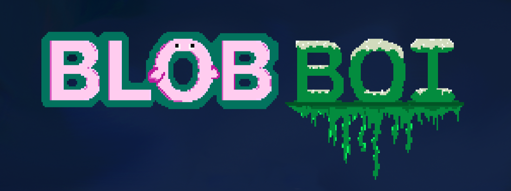
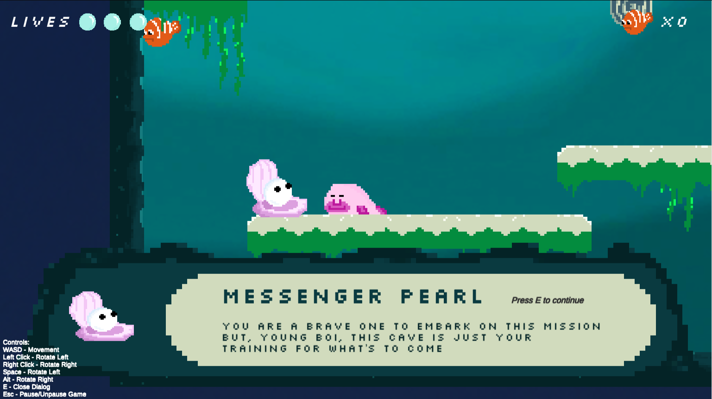

BlobBoi: the Game
Gameplay, Character & Narrative Design
April - May 2022
I was the visual and narrative designer for the BlobBoi game, a final game design made during a gameplay development course.
The game followed the story of one blobfish's adventure discovering the ancient art of gravity manipulation. The maps increase in difficulty as BlobBoi practices his manipulation skills. The goal is to navigate through each level and rescue trapped fishes without falling out to the unknown.
As the levels advance, shapes the maps bring forward narrative along with storytime advice given by the messenger pearl, as seen above. The messenger pearl was designed to standout, look wise and act as an interactive guide to the player.
The blobfish is the main character and the only animated sprite. When it is idle or sliding on a platform, BlobBoi has eye blinking and tail wagging animations. Once he jumps into the air, BlobBoi swims with its tail while his facial expression changes.